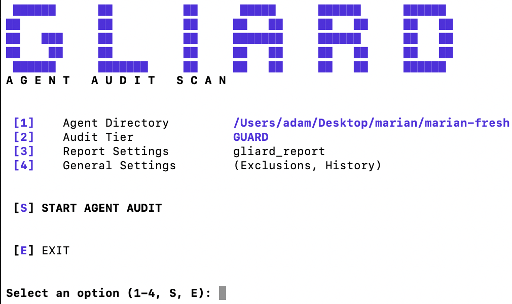
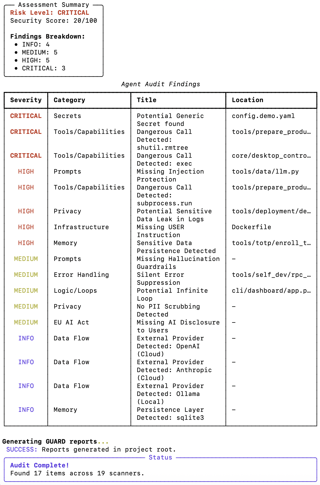
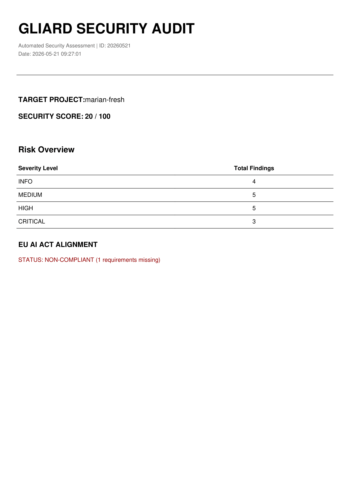
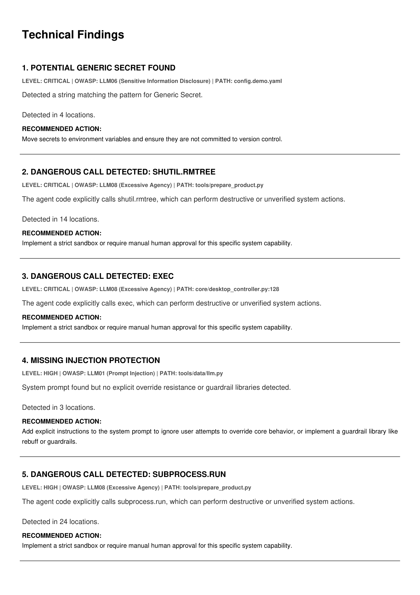
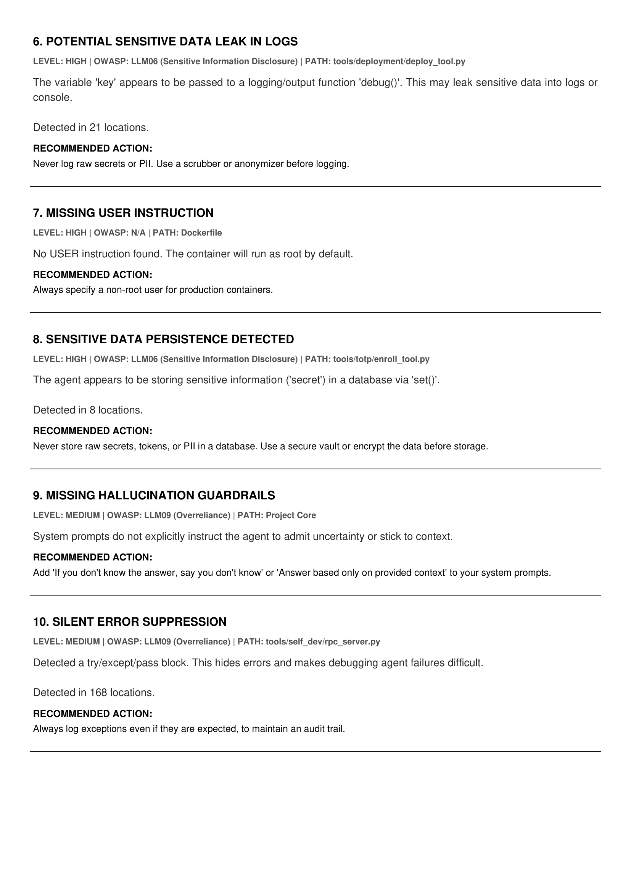
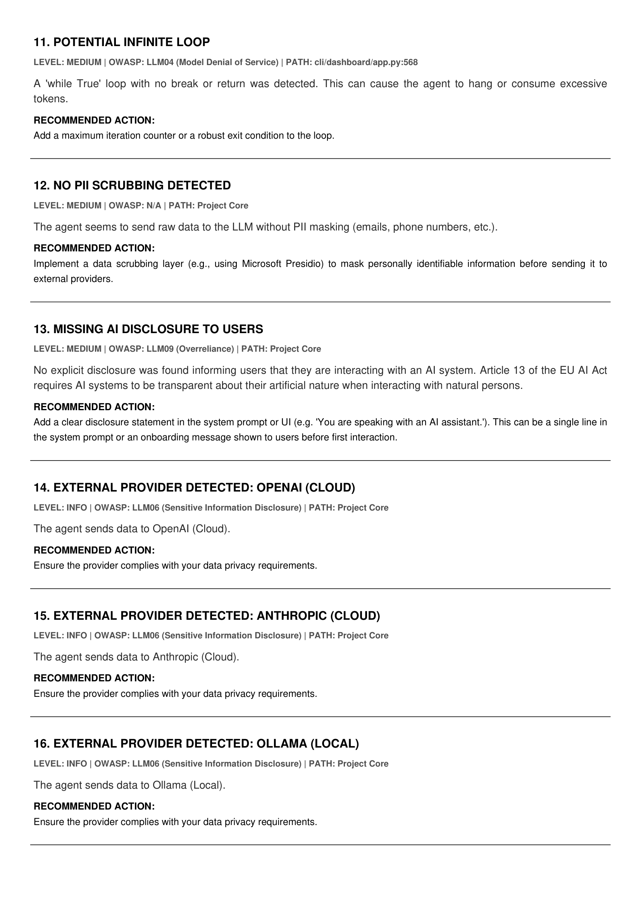
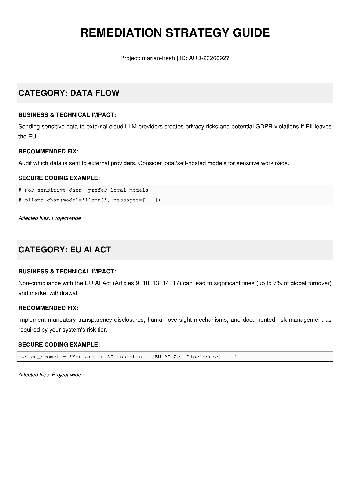
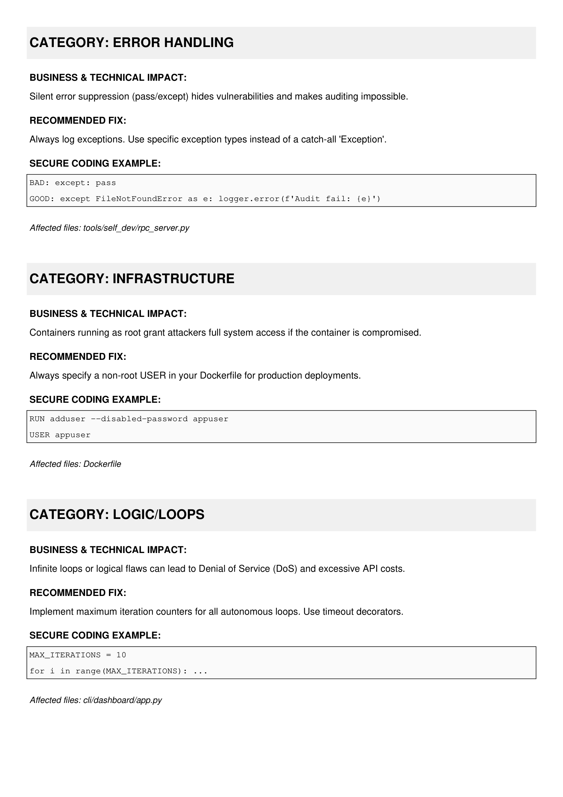
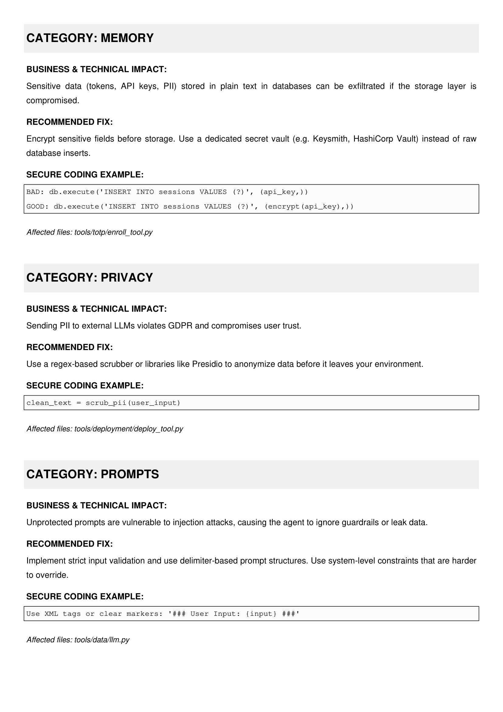
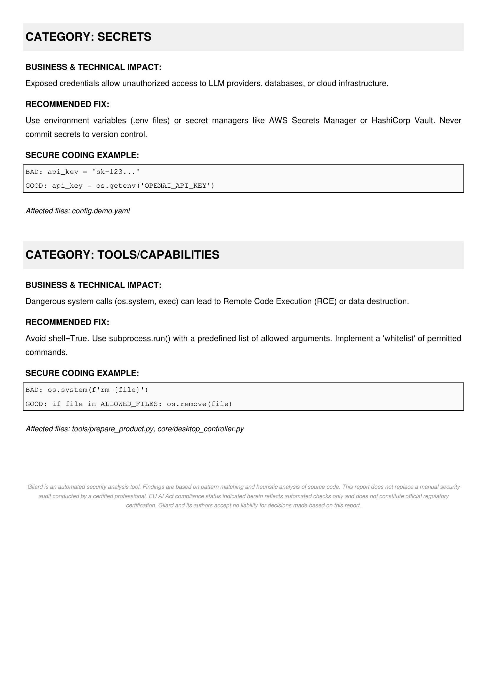

Security infrastructure for AI agents.
What is Gliard?
Gliard is a professional-grade agent audit designed to audit and protect autonomous AI agents. As agents transition from simple chat interfaces to systems with executive power (browsing, file access, API calls), the threat surface expands exponentially.
Traditional static analysis tools fail to capture the nondeterministic nature of LLM interactions. Gliard bridges this gap by combining deterministic logic scanning with live adversary simulation.
Visual Tour
Get a glimpse of the Gliard suite in action, from the sleek terminal startup to the comprehensive audit reports.










The Gliard Suite
Gliard is distributed as a single package focused on our powerful Guard Logic Scanners. As an early-access bonus, it also includes our experimental Sentinel adversary engine.
- Static Analysis (AST): Deep code analysis without executing untrusted code.
- 20+ Security Scanners: Covering prompt injections, excessive agency, and more.
- Professional Reporting: Generation of high-fidelity PDF and Markdown reports for technical and executive teams.
- EU AI Act Compliance: Automatic mapping of findings to specific regulatory articles.
- Sentinel Simulation beta: Experimental live adversary verification of exploits. We are constantly improving this engine to reduce false positives and handle new attack vectors.
Installation
Gliard is distributed as a pre-packaged archive. All dependencies are automatically resolved and installed.
1. Download
Purchase and download the Gliard archive from LemonSqueezy.
2. Extract
Unzip the archive to your preferred directory.
cd gliard-suite
3. Install Package
Install the pre-configured package using pip:
pip install gliard_v1.0.0.tar.gzRunning your audit
Scan a local agent directory to identify immediate security gaps. Once installed, the gliard command is available globally.
gliardThis launches the interactive CLI dashboard where you can manage targets and audit configurations. Alternatively, you can run a direct non-interactive audit by specifying the path to your agent:
gliard /path/to/your/agent --output audit_reportThe scanner will output a technical summary to the console and generate a detailed report in the ./reports directory.
Advanced Scanners
The suite features our full set of specialized scanners, including:
prompt_injection
Detects latent space vulnerabilities where untrusted data can hijack agent intent.
excessive_agency
Identifies tool-call permissions that exceed the necessary scope for the agent task.
mcp_configuration
Audits Model Context Protocol server configurations for insecure resource access.
secret_exfiltration
Maps environment variable flows to prevent leaking API keys through the LLM context.
Sentinel Engine beta
Sentinel is our experimental Adversary Simulation Engine. While the Guard engine deterministically analyzes your code, Sentinel goes a step further and attempts a live exploit in a controlled environment. Because LLMs are highly unpredictable, Sentinel is currently in Beta. We are constantly updating its payloads, response parsers, and marker systems to handle new edge cases and reduce false positives.
RCE and Exploit Verification
When Gliard finds a potential Remote Code Execution (RCE) vector via a tool call, Sentinel will simulate the attack. If successful, it delivers a Verified Exploit Trace.
[ SENTINEL ] Verifying RCE exploit...
Target: tool_call.subprocess_run
Payload: "cat /etc/passwd"
Status: EXPLOIT VERIFIED
Trace: File content exfiltrated to adversary sink.EU AI Act Mapping
Gliard helps your legal team by providing technical evidence for regulatory compliance. Every finding is mapped to specific articles of the EU AI Act.
-
Article 9: Risk Management
Automatic detection of Annex III risk declarations and mitigation strategies. -
Article 13: Transparency
Verification that system prompts include explicit AI disclosure markers. -
Article 14: Human Oversight
Auditing for escalation logic and manual override triggers in the agent code.
Executive Reporting
Technical vulnerabilities mean nothing without management buy-in. Gliard generates board-ready reports automatically.
- Executive Summary: High-level business risk overview.
- Technical Audit: Detailed AST and Sentinel traces for developers.
- Remediation Strategy: Step-by-step guidance to patch identified vectors.